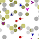

|  |
Pasta
http://members.logical.net/~marshall |
k-snipes: Agents that incorporate a very simple model of individual learning by prediction error minimization (PEM) in some agents. These agents implement one kind of "K-strategy" which, roughly, prioritizes survival over reproduction. (I do mean it's a model of PEM; what these agents do, internally, is much, much simpler than what's usually meant by PEM.)
r-snipes: Agents that don't learn, but produce different types of offspring that are well suited or poorly suited for survival in different environments. These agents implement one kind of "r-strategy", which roughly prioritize reproduction over survival.
s-snipes: Agents that engage in a simple form of social learning by copying from nearby agents ("s-snipes").
The point is to compare evolutionary strategies and see which is selected for under different parameter combinations.
The two environments: Snipes eat mushrooms in one of two environments. In the east (usually left) environment, small mushrooms are nutritious (gray-brown-green) and large mushrooms are poisonous (greenish yellow). In the west (usually right) environment, large mushrooms are nutritious (dark gray) and small mushrooms are poisonous (light gray).
Basic snipe behavior: Snipes move randomly within an environment, gain energy from eating nutritious mushrooms, and lose energy from eating poisonous mushrooms. Snipes that accumulate sufficient energy give birth to a single offspring, losing energy as a result of the birth. (one snipe can have multiple offspring if it repeatedly acquires enough energy to do so.) At birth, each newborn snipe is placed at a random location in a randomly chosen environment (as if parents had temporarily migrated to a new location to give birth).
k-snipes (red circles with pointers) initially eat mushrooms randomly, but learn to eat mushrooms whose size signal (which is normally distributed) indicates that they are probably nutritious. The direction of a k-snipe's pointer—how far up or down it is pointing—indicates the degree of the snipe's preference for large or small mushrooms. For details, see doc/kSnipePerception.pdf at https://github.com/mars0i/pasta.
r-snipes (blue triangles) never learn. They produce offspring that exhibit developmental differences: Roughly half of any snipe's offspring (upward-pointing triangles) always prefer large mushrooms; the others (downward-pointing triangles) always prefer small mushrooms. Those suited to the environment in which they live tend to survive and reproduce, and those unsuited to their environment generally die before reproduction.
s-snipes (purple wing shapes) use a social learning or cultural transmission strategy known as success bias. A newborn s-snipe examines nearby snipes and copies the current mushroom size preference of whatever nearby snipe has the most energy. If there are no snipes that are sufficiently near (see the parameter list below), the s-snipe tries again on the next timestep. Once an s-snipe adopts a preference, the preference never changes. The direction in which an s-snipe points—how far up or down it is tilted—indicates the degree of the snipe's preference for large or small mushrooms.
Colors: Snipes' energy levels are reflected in their brightness, with greater brightness indicating more energy. (This effect can be subtle.) The two mushroom colors in each environment indicate nutritiousness/poisonousness: Darker colors indicate nutritiousness—i.e. these mushrooms are energetically favorable to snipes—while lighter colors indicate poisonousness—energetically unfavorability. (The fact that the East and West mushrooms have different hues no functional meaning; this could be considered a difference between mushroom species, for example.)
Monitoring individual snipes: If you pause a run, you can double-click on a snipe to monitor its internal state and watch it move. It will be circled so that you can keep track of it. You can use the Detach button to monitor multiple snipes at the same time. If you double-click on the little magnifying glass next to energy, for example, and choose chart, you'll open a plot of that snipe's energy level over time.
Overlapping environment display: It's possible to display both environments overlapping in the same window, using the "overlapping subenvs" item on the Displays tab. Then you can think of snipes that only eat mushrooms of a given color as having a random developmental restriction to eating those mushrooms.
Command line: You can also run pasta from a command line (see online documents or README.md in the full distribution). In that case, running it with "--help" will show options for running pasta.
| NumKSnipes: | Size of k-snipe subpopulation |
| NumRSnipes: | Size of r-snipe subpopulation |
| NumSSnipes: | Size of s-snipe subpopulation |
| MushProb: | Average frequency of mushrooms. |
| MushHighSize: | Size of large mushrooms (mean of light distribution) |
| MushLowSize: | Size of small mushrooms (mean of light distribution) |
| MushSd: | Standard deviation of mushroom light distribution |
| MushPosNutrition: | Energy from eating a nutritious mushroom |
| MushNegNutrition: | Energy from eating a poisonous mushroom |
| InitialEnergy: | Initial energy for each snipe |
| BirthThreshold: | Energy level at which birth takes place |
| KPrefNoiseSd: | Standard deviation of internal noise in k-snipe preference determination. |
| BirthCost: | Energetic cost of giving birth to one offspring |
| MaxEnergy: | Max energy that a snipe can have. |
| Lifespan: | Each snipe dies after this many timesteps. |
| CarryingProportion: | Snipes are randomly culled when number exceed this times # of cells in a subenv (east or west). |
| NeighborRadius: | s-snipe neighbors (for copying) are no more than this distance away. |
| EnvWidth: | Width of env. Must be an even number. |
| EnvHeight: | Height of env. Must be an even number. |
| ExtremePref: | Absolute value of r-snipe preferences. |
| ReportEvery: | Report basic stats every i ticks after the first one (0 = never); format depends on -w. |
| KMaxPopSizes: | Comma-separated times and target subpop sizes to cull k-snipes to, e.g. "time,size,time,size" |
| RMaxPopSizes: | Comma-separated times and target subpop sizes to cull r-snipes to, e.g. "time,size,time,size" |
| SMaxPopSizes: | Comma-separated times and target subpop sizes to cull s-snipes to, e.g. "time,size,time,size" |
| KMinPopSizes: | Comma-separated times and target subpop sizes to increase k-snipes to, e.g. "time,size,time,size" |
| RMinPopSizes: | Comma-separated times and target subpop sizes to increase r-snipes to, e.g. "time,size,time,size" |
| SMinPopSizes: | Comma-separated times and target subpop sizes to increase s-snipes to, e.g. "time,size,time,size" |
Some data is reported in other variables displayed in the Model tab:
| PopsSize | Number of snipes in the population (in both environments). |
| KSnipeFreq | Relative frequency of k-snipes. |
| RSnipeFreq | Relative frequency of r-snipes. |
| SSnipeFreq | Relative frequency of s-snipes. |
If you click on the little magnifying glass next to these elements, there are additional options that MASON provides for observing their values.
If you run pasta from the command line, (see online documents or "--help" will show options for setting the parameters listed above, as well as a few other options concerning whether to display the GUI concerning writing summary data to a file.
There is additional information at https://github.com/mars0i/pasta/README.md.
Experiment with parameters to see if you can cause k-snipes win the evolutionary race. For example, before the start of a k-snipe vs. r-snipe run, reduce MushNegNutrition. Does this affects k-snipes' relative success? Why?
k-snipes begin with no preference for large or small snipes. This means that at the beginning of a run, they are all in the same ignorant state. At later times, there will be a mixture of well trained, still poorly trained, and new, completely ignorant k-snipes. This is not a random distribution. k-snipes that are well-trained for their environment may be more prevalent than those that are poorly trained for their environment. You can use the commandline cull options to specify a time at which, for example, the k-snipe and r-snipe subpopulations are randomly sampled and set back to their initial frequencies. The k-snipe preference distribution will be more "realistic" for an ongoing population. Does this make a difference to the ultimate outcomes of competition between snipe types?